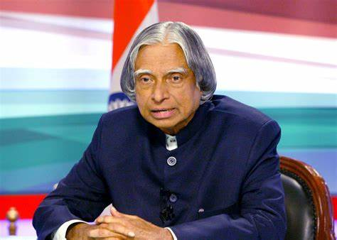

Dr. A. P. J Abdul Kalam

Great Indian Scientist and Ex-President of India who played a leading role in the developement of India's missile and nuclear wweapons Program
About the Kalam Sir
*A.P.J Abdul Kalam, in full Avul Pakir Jainulabdeen Abdul was born on october 15,1931,Rameshwaram,Tamil nadu,India.*He served as the 11th president of India from 2002 to 2007.
*Kalam sir earned degree in aeronotical engineering from the Madras Institute of Technology and in 1958 joined the defense Research and developement Organisation(DRDO).
*In 1969 he moved to the Indian Space Research Orgnisation,where he was project director of the SLV-3,the first satellite launch vehicle.
*In 1982 he rejoined the DRDO for the large number of missile programs,so that he entitled as "Missile Man" of India.
*kalam sir awarded with
Bharat Ratna
Padma Vibhushana
Padma Bhushan
Hoover Medal
A.P.J Abdul Kalam
On Wikipedia.
[Developed by @Amansab H]